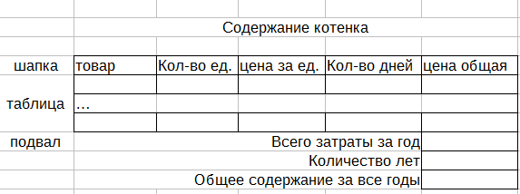
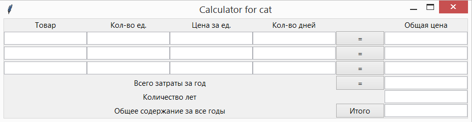
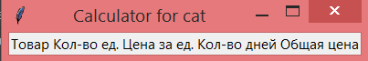
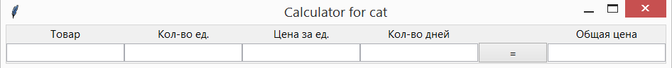
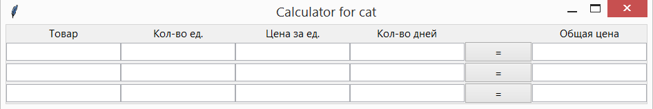
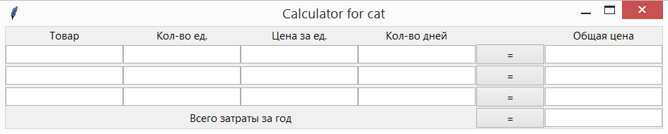

12. Tkinter. Содержание котенка (часть 1)¶
Данный проект создадим с использованием grid и ttk виджетов.
12.1. Планирование проекта¶
Первое с чего начинается новый проект, после идеи, это план реализации:
- выберем технологии реализации grid и ttk
- окно имеет вид таблицы: шапка + тело таблицы
- «шапка»: таблицы имеет вид: товар - количество - количество дней - цена за ед. - общая цена
- «строка»: таблицы имеет вид: товар - количество - количество дней - цена за ед. - общая цена
- «подвал»: таблицы имеет вид: общие затраты в год - количество лет - всего затраты
Примерный вид программы можно реализовать в табличном редакторе:
Визуально создадим окно подобное следующему:
К начальному проекту добавили кнопки, при нажатии на которые будет производиться подсчет.
12.2. Создание интерфейса¶
Создадим окно с использованием ttk элементов:
from tkinter import *
from tkinter.ttk import *
root = Tk()
root.title('Calculator for cat')
root.mainloop()
Для создания подписей колонок используем метку - Label() с соответствующими параметрами и разместим их используя метод - grid():
Label(text="Товар").grid(column=0, row=0)
Объявлять переменную и присваивать ей значение:
lbl = Label(...)
не обязательно, если в дальнейшем мы не планируем менять свойства созданной метки.
Создав верхний ряд окна из меток получим следующий вид:
Второй ряд окна состоит из 5 однострочных полей для ввода данных и кнопки для подсчета. Для визуальной отрисовки виджетов можно воспользоваться следующими строчками кода, копируя и внося в них необходимые изменения:
entry_11 = Entry().grid(column=0, row=1)
button_1 = Button(text="=", command=count_first).grid(column=4, row=1)
Для удобства цифры в именах переменных означают их позицию: entry_11 - 1 строчка и 1 столбец, и номера позиции поля ввода позволяют не запутаться. Кнопка одна, поэтому для неё указывается только номер строки. После добавления второго ряда виджетов должен получиться следующий вид окна:
Для добавления ещё дух строчек повторим предыдущих шаг, внося необходимые изменения в код для получения следующего вида окна:
При желании можно добавить и более количество строк.
Далее добавим строки итогового подсчета сначала «Всего затраты за год», которая состоит из метки, кнопки и однострочного текстового поля:
Label(text="Всего затраты за год", justify=RIGHT).grid(column=0, row=4, columnspan=4)
button_6 = Button(text="=", command=count_first).grid(column=4, row=4)
entry_for_year = Entry().grid(column=5, row=4)
Результат выполнения:
В следующей строке «Количество лет» нам не потребуется кнопка, поэтому мы добавим только метку и текстовое поле. Последняя строчка интерфейса будет состоять из метки, кнопки «Итог» и текстового поля для вывода результата.
Воспользовавшись предыдущими примерами кода и внеся необходимые изменения, должно получиться финальное окно: